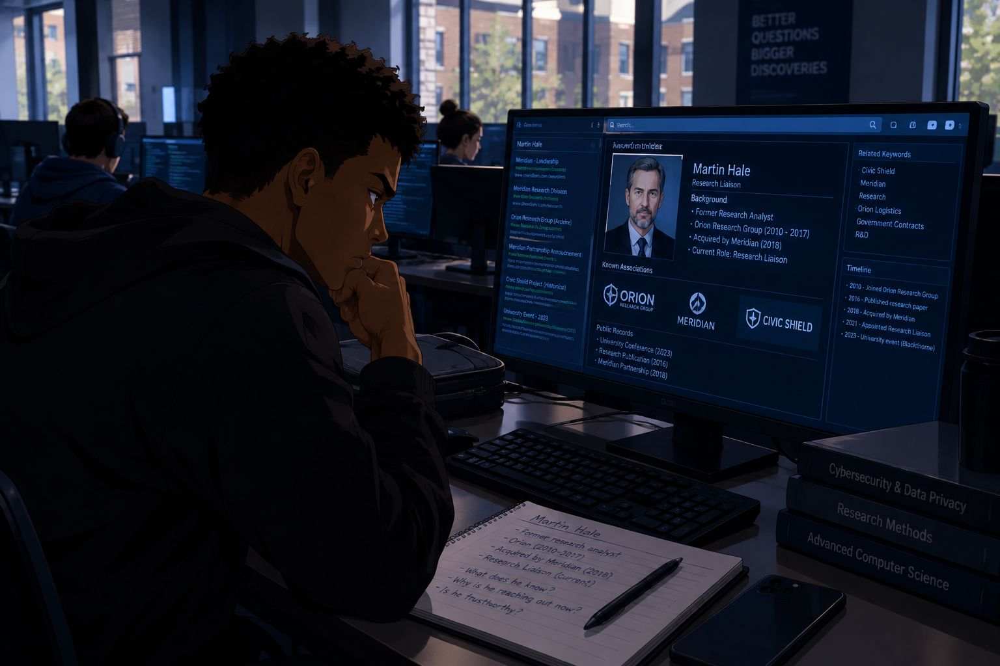
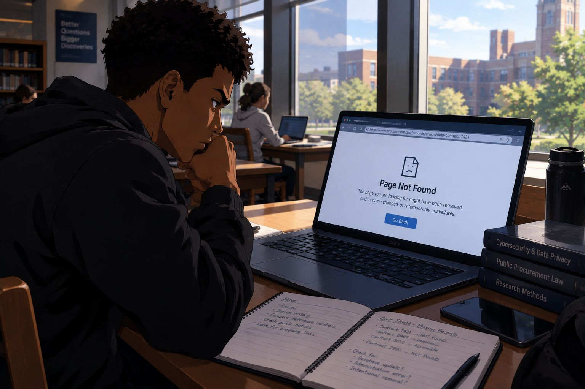
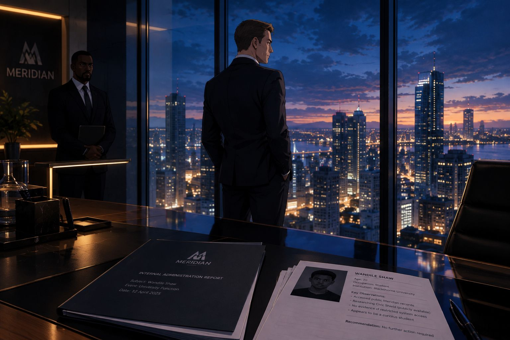
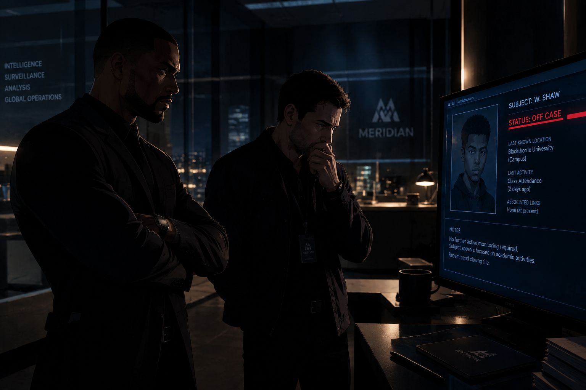
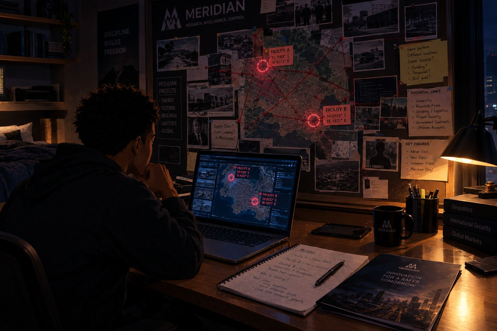
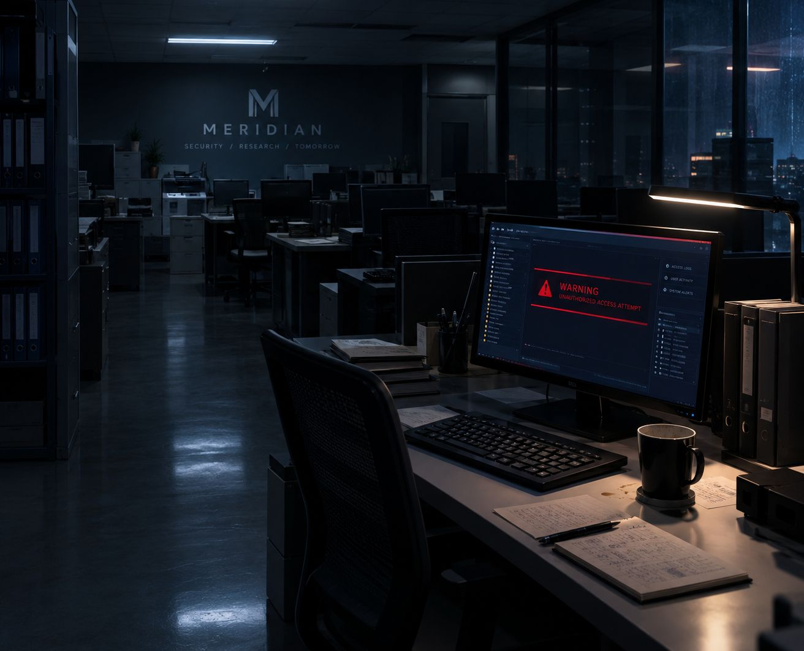

ECLIPSE
Episode 3 · The Man Who Disappeared
Cold Open
The Missing Man
6:12 AM · An undisclosed office, Blackthorne City
A dark room.
The only light came from a single monitor, and it was blue.
On the screen was a photograph of a middle-aged man: tired eyes, a careful smile, the look of someone who had never expected to end up in a file like this.
DR. ELIAS REED.
FORMER RESEARCH DIRECTOR
ASSOCIATED PROJECT: CIVIC SHIELD
LAST KNOWN EMPLOYER: MERIDIAN RESEARCH DIVISION
STATUS: MISSING
A desk covered in printed pages sat in the glow. Someone had drawn lines through the public records, one after another: UNAVAILABLE. UNAVAILABLE. UNAVAILABLE.
On a second monitor, a procurement record glowed beside the first. A single company name sat in its header.
Orion Logistics.
“Did he receive it?” a voice asked.
“Yes,” said a second voice. “The report was delivered.”
“And the warning?”
“Sent.”
A pause.
“Has he stopped?”
“We haven't seen any new activity.”
The first person looked at Dr. Reed's photograph for a long time.
“That doesn't mean he's stopped.”
The screen changed. A folder opened, then locked itself again.
CIVIC SHIELD — ARCHIVE 02
ACCESS DENIED
“Then we wait,” the voice said quietly. “Let him find the next piece.”
The monitor went black.
ECLIPSE — “THE MAN WHO DISAPPEARED”
Chapter 1
The Friends Notice
8:24 AM · Blackthorne University
The morning sun lay across the brick buildings like it was trying to make Monday look better than it was.
Wandile crossed the courtyard beside Ethan with a takeaway coffee in one hand and his phone in the other. He checked the screen, opened an email, then locked the phone the instant he noticed Ethan watching him.
“You've checked that phone about twelve times since we left the cafeteria.”
“Have you been counting?”
“I have a gift for numbers.”
“You failed that statistics quiz.”
“A temporary setback in my otherwise extraordinary career.”
Wandile almost smiled.
Olivia and Charlotte caught up with them near the steps.
“Are we still meeting for lunch?” Charlotte asked.
“Obviously,” said Ethan. “I have plans involving food.”
“You always have plans involving food,” Olivia said.
“And yet nobody appreciates my consistency.”
Charlotte laughed. Olivia didn't, quite. She was looking at Wandile's phone, then at his face.
“Is something going on?”
“Why would you ask that?”
“Because you've been somewhere else all morning.”
“I've got a project I'm working on.”
“A university project?” Charlotte asked.
“Something like that.”
Olivia studied him a moment too long. She didn't push. But she wasn't convinced, and she let him see that she wasn't.
The lecture hall doors swung open.
“Come on,” Ethan said. “I'd rather be inside before the lecturer decides attendance is a personality trait.”
They filed in. As Wandile stepped through the doors, his phone buzzed.
Mr. Shaw, I'd still appreciate the opportunity to discuss the material you've been reviewing. There are some details about the Civic Shield project that may help clarify your questions. Please let me know when you're available.
He read it twice. Then he saved it.
He had another person to verify.
Chapter 2
Who Is Martin Hale?
11:45 AM · University computer lab

Between classes, Wandile claimed a workstation in the back of the computer lab and opened his notebook beside the keyboard.
He searched for Martin Hale's professional history. It took four minutes to find the part that mattered.
Hale had once worked for a small research company. That company had later been acquired by a Meridian subsidiary.
That didn't make him a villain. Half the city had worked for something Meridian eventually bought.
But it did mean Wandile needed to be careful.
He opened a new message and wrote it slowly, the way he checked code before running it.
He sent it. The reply took less than a minute.
Wandile leaned back in the chair.
“That's reassuring,” he muttered.
A man who wouldn't put it in writing was either being careful or hiding something. From the outside, the two looked exactly the same.
He didn't delete the message. He didn't agree to a meeting either. Instead, he wrote one line at the bottom of the page and underlined it twice.
VERIFY HALE BEFORE MEETING.
Then he went back to work.
Chapter 3
The Records Disappear
2:18 PM · University library

The library was quiet in the way only a library can be, a hundred people being silent together.
Wandile sat at a table near the windows with his laptop open and his notebook beside it. He went back to a public procurement database he'd searched earlier in the week and typed in a Civic Shield contract reference.
PAGE NOT FOUND.
He refreshed. Same result.
He tried the direct address of the record.
THIS DOCUMENT IS NO LONGER AVAILABLE.
Wandile frowned.
He searched for a second document from the same database. That one loaded without a problem. He tried another Civic Shield reference.
Unavailable.
He pulled up his saved notes and compared reference numbers line by line. Several records he had opened a few days ago were simply gone.
“That's convenient,” he said under his breath.
He took a screenshot of the error and wrote down the time. Then he checked the database's public notices. Nothing. No announcement, no maintenance message, no explanation.
He didn't assume Meridian had personally deleted anything. Records vanish for boring reasons all the time: servers migrate, contracts get archived, someone retypes a reference and breaks a link.
But boring reasons rarely arrive on the same day as an email that says in person.
He opened his investigation file.
He saved it. Across the table, his phone lit up.
Wandile smiled despite himself and shut the laptop.
For the next hour, he was going to be a university student.
Chapter 4
Adrian
3:40 PM · Meridian headquarters

Adrian Voss stood at a floor-to-ceiling window, watching the financial district glitter below him.
On his desk lay a report from Meridian's internal administration team. One section mentioned the university event he had attended a few days earlier.
A staff member waited across the desk.
“There's one item you may want to be aware of.”
Adrian turned from the glass. “Go on.”
“A computer-science student named Wandile Shaw has been researching some of our older public project records. Civic Shield appears to be among them.”
Adrian recognised the name at once.
“Shaw. I met him at the university event.”
“Yes. We don't have evidence that he's accessed any restricted systems. His activity appears to involve public records.”
Adrian flipped through the report. “Has he been contacting anyone internally?”
“Nothing confirmed.”
He closed the folder.
“Then there's no reason to make assumptions.”
“Would you like us to look into it further?”
Adrian considered it for exactly as long as the question deserved.
“No. If he's interested in our public research, we can answer his questions directly. Most of the people who ask me hard questions end up working for me. Arrange a conversation.”
“Understood.”
The staff member left. Adrian looked out over the city again.
He remembered Wandile as a bright student with a good handshake. He didn't see an enemy. He saw a young man asking questions without understanding the history behind the answers.
“Curiosity can be useful,” he said quietly.
Then he went back to work.
Across the city, in the middle of a half-eaten sandwich, Wandile's phone buzzed with a call from an unfamiliar number.
Meridian's public research office. Mr. Voss would be glad to speak with him this afternoon. Fifteen minutes. Four-twenty-five. If he was available.
Chapter 5
A Conversation About Curiosity
4:25 PM · Meridian headquarters
The meeting room was bright, modern, and spotless, with a long window and a view that made the whole city look like a model someone had built.
Wandile signed in at the front desk, took a VISITOR badge, and clipped it to his jacket. He had decided on the way up that he would listen more than he talked.
Adrian rose to greet him.
“Wandile. Good to see you again.”
“Mr. Voss.”
They shook hands. Adrian gestured to a chair and took the one opposite, leaving his desk behind, the way a man does when he wants a conversation to feel like a conversation.
“I've heard you've taken an interest in some of Meridian's older projects.”
Wandile met his gaze.
“I didn't realise reading public records was unusual.”
Adrian smiled faintly. “Not at all. Curiosity is valuable. But curiosity without context can lead people to some very mistaken conclusions.”
“Then context shouldn't be a problem, should it?”
A small laugh. “Fair point.”
He folded his hands. “Tell me, what exactly have you been looking into?”
Wandile had already decided not to hand over everything.
“A few inconsistencies. Old project information that doesn't line up with the public summaries.”
“Civic Shield?”
He paused, just for a second.
“Among other things.”
“It was an ambitious project,” Adrian said. “Some of its work was discontinued, some was reorganised, and some of the records are older than the systems we use today. That can make the public documentation confusing.”
It was a reasonable explanation. Wandile couldn't tell from this chair whether it explained the missing records.
“So there's nothing unusual about the project being cancelled?”
“Projects get cancelled for all sorts of reasons. Budgets change. Priorities change. Technology develops. A cancellation doesn't automatically imply wrongdoing.”
“Of course.”
“You're studying computer science, aren't you? Then you understand how easy it is to draw the wrong conclusion from incomplete data.”
“I also understand that incomplete data can make it hard to draw any conclusion at all.”
For a moment, neither of them said a word.
Then Adrian smiled again, and this time it looked almost genuine.
“You may have a point.”
He reached for a glossy brochure on the table and slid it across.
“If you're interested in Meridian's work, our public research archive is open to everyone. And if you come across a record that looks incomplete, contact our public research office. There's no need to guess when you can ask.”
Wandile took the brochure.
“I appreciate that.”
“I mean it.”
“I'll keep that in mind.”
The conversation loosened after that. Adrian asked about his coursework and what he wanted to build one day. Wandile answered honestly and gave away nothing about the notebook in his bag.
Neither man raised his voice. Neither made a threat. It was the most civilised conversation Wandile had ever had with a man he didn't trust.
They stood and shook hands.
“It was good speaking with you, Wandile.”
“Likewise, Mr. Voss.”
Adrian watched him go, then turned back to his desk. As far as he was concerned, the student had received an explanation and a legitimate road for further questions.
There was no reason to see him as a serious threat.
Outside, in the cool evening air, Wandile looked down at the brochure.
Then he slid it into his bag.
He hadn't found the answers he wanted. But he hadn't found a reason to trust Adrian's explanation, either.
He took out his phone and wrote a short message he had been thinking about since the elevator.
He sent it before he could change his mind.
The answer came within a minute.
Wandile stared at the screen.
Whoever Martin Hale was, he had given up very quickly. That was either a relief or a clue.
Chapter 6
Settled
5:02 PM · An undisclosed office

A computer screen displayed a short internal update.
WANDILE SHAW — CONTACT WITH ADRIAN VOSS COMPLETED.
FOLLOW-UP CONTACT DECLINED BY SUBJECT.
NO FURTHER ACTION REQUESTED.
An operative read it. Another person stood nearby, arms crossed.
“So that's it?”
“Voss spoke to him. The matter appears to be settled.”
“And the warnings?”
The operative closed the report.
“If Shaw has any sense, he'll leave it alone.”
“What if he hasn't?”
“Then we'll find out eventually.”
The associate looked uncertain. “Does Voss know about the messages?”
The operative turned sharply.
“That's not your concern.”
The associate fell silent. The operative opened another file, one that had nothing to do with Wandile at all.
For now, he assumed the student had moved on.
He had no proof of that. He simply wanted to believe it.
And that was the strange thing about the evening. Adrian had closed the matter. The operative had closed the matter. Martin Hale had accepted a polite no and gone quiet.
Three people in three different offices had reached the same conclusion: Wandile Shaw had stopped.
There was exactly one person in Blackthorne City who knew they were wrong.
Chapter 7
The Foundry
7:15 PM · The Foundry restaurant
The Foundry was loud in the good way: clattering plates, someone laughing at the bar, a playlist nobody had chosen but everybody was tapping a foot to.
Wandile sat at their usual table with Ethan, Olivia, and Charlotte. Ethan was halfway through a sandwich. Charlotte was writing something in a notebook. Olivia had her laptop open but wasn't working.
Wandile put his phone face down.
“So,” Ethan said, “how was your mysterious appointment?”
“What appointment?”
“You disappeared this afternoon.”
“He told us he had something to do,” Charlotte said.
“Exactly. Mysterious.”
“I met someone about a research project.”
Olivia looked up. “What kind of research project?”
“One involving old company records.”
“That sounds very specific for something you're pretending isn't interesting.”
Wandile took a sip of his drink. “I never said it wasn't interesting.”
“You also haven't said much about it.”
“Because there's not much to say yet.”
Olivia watched him carefully.
“You're not in trouble, are you?”
His expression softened.
“No. I'm fine.”
It wasn't the whole truth. But it wasn't a lie about danger, either, because he honestly couldn't say anyone was after him. And he didn't want his friends worrying over something he couldn't explain.
Charlotte closed her notebook.
“If this project starts interfering with your life, at least tell someone.”
“I'll keep that in mind.”
“Great,” Ethan said. “Now that we've had our weekly emotional check-in, can we order dessert?”
“That was not a weekly emotional check-in,” said Charlotte.
“It was for me.”
They laughed. Wandile laughed with them, and for a while the conversation drifted: deadlines, group assignments, whether Ethan could be trusted with a spreadsheet.
“Absolutely not,” said everyone.
“My app idea would fix all of this,” Ethan said.
“Which app?”
“The one that reminds people to charge their phones.”
“Phones already do that.”
“Not with my level of emotional support.”
Olivia laughed so hard she had to put her drink down. When she looked up, she caught Wandile's eye, and he gave her a small, real smile, the first one all day.
Neither of them said anything. Ethan, who missed nothing and pretended to miss everything, started loudly eating fries.
Later, while the others argued about dessert, Olivia stayed quiet and thoughtful.
She didn't know what Wandile was hiding.
She only knew he was hiding something.
Chapter 8
The Next Connection
9:38 PM · Wandile's room

Wandile's room was dark except for the laptop and a single lamp. On the wall behind the desk, his research board waited, covered in dates and thin red lines.
He placed Adrian's brochure beside his notebook.
The meeting had given him exactly one useful thing: a legitimate way into Meridian's public research archive.
He opened it and searched for Civic Shield. Some documents appeared. Others didn't. He lined the archive up against his saved notes and the procurement records he'd collected earlier in the week, the way you hold two transparent sheets against a window.
One name kept showing up.
ORION LOGISTICS.
He opened the procurement record. Orion Logistics had provided transport services to a facility mentioned in an old Civic Shield document. The facility had a public address.
RIVERTON STORAGE COMPLEX.
Wandile wrote it on a clean page.
He did not decide to go there. Not tonight. Instead, he started checking the address against everything else he could find: property filings, business registrations, the dates attached to the original contracts.
None of it proved anything illegal. All of it justified more questions.
He looked at it for a moment, then added a second box below it. This one wasn't about Meridian at all.
He read the last line twice. It was the hardest one to write, because it asked him to be a good liar.
His eyes drifted to a folder labelled QUARANTINE. Inside, the report that had arrived out of nowhere sat unopened, exactly where he'd left it.
REED_FINAL_REPORT.pdf
Not yet.
He opened his messages. The two warnings were still there, from days ago, with nothing new beneath them.
He looked at them for a long moment.
“Someone went to a lot of trouble to make sure this disappeared,” he said softly, to nobody, to the room, to the board on the wall.
He pulled the records toward him one more time.
“Question is… why?”
Chapter 9
The Second Piece
11:16 PM · Unknown location
A figure sat at a desk in a room lit by several monitors.
One screen displayed a public record for Orion Logistics. Another showed a satellite view of the Riverton Storage Complex, a grey rectangle at the edge of the city.
The figure opened a message window. The recipient was hidden.
The figure considered it for a long time.
Then deleted it.
A second window opened. A folder, locked, its contents hidden behind a list of references and nothing else.
CIVIC SHIELD — ARCHIVE 02
The figure selected one line.
DR. ELIAS REED — FINAL REPORT
The screen went dark before the document could open.
“Not yet,” the figure whispered.
END OF EPISODE 3
After the Credits
The Old Key
2:09 AM · Meridian headquarters, internal systems office

A Meridian employee sat alone at a workstation, working through the dull ritual of a routine report about access to archived project records.
Most of the lines were ordinary. One was not.
Someone had tried to retrieve information from the Civic Shield archive using an outdated internal credential. The attempt had failed. It had come through a relay that hid where it started.
ACCESS ATTEMPT — CREDENTIAL EXPIRED
STATUS: DENIED
The employee frowned, yawned, and forwarded the report to the appropriate department.
No mention of Wandile appeared anywhere in the log. Nobody knew whether the attempt was connected to him.
For now, Meridian had another unanswered question of its own.
END